[Porträt folgt]Maître Didian Poulet
Maître Didian Poulet
Der Chef de Cuisine humoristique.
Herzlich Willkommen
Herzlich willkommen auf Öttes Seiten! Ein kleiner, charmanter französischer Koch und sein quicklebendiges Zwerghuhn servieren Slapstick, Comedy und feine Küchenzaubereien — auf Ihrer Gala, Ihrem Dinner, Ihrer Firmenfeier.
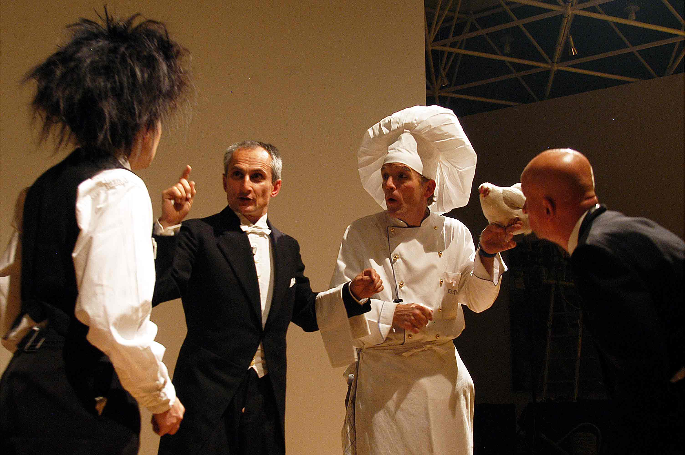
Wenn Sie etwas Besonderes
Sie möchten für Ihre Veranstaltung etwas Besonderes ausbrüten (lassen)? Dann bestellen Sie doch den Maître persönlich.
Mit dem Chef der Haute Cuisine humoristique, Didian Poulet, bieten Sie Ihrer Festgesellschaft einen charmanten Gaumenkitzel französischen Humors. Der Comedian Didian Poulet serviert gemeinsam mit Jaquiline — einem lebendigen Zwerghuhn — Slapstick, Comedy und feine Küchenzaubereien.
Vom intimen Sterne-Dinner bis zum Incentive in drei Akten — wählen Sie den Gang.
Das Hauptprogramm: Walk Act zwischen den Tischen, Salto Omelett auf fünf Bratpfannen, klingende Gloschen, magisches Dessertfinale.
Hauptprogramm Plat II.Wenn die Gäste in die Küche gebeten werden — ein Mitkoch-Event mit Twist.
Mitkoch-Event Plat III.Ein Trio aus Kollegen: der Maître, die fesche Babette, der englische Chef Phil Collins. Koch- & Kellnerkabarett.
Trio-Programm Plat IV.Ein Erlebnisabend in drei Akten, der das Publikum unfreiwillig auf die Bühne bringt.
Incentive-ProgrammMaître Didian Poulet — ein kleiner, charmanter französischer Koch und seine gefiederte Assistentin Madame Jaquiline, ein quicklebendiges Zwerghuhn, servieren eine Comédie à la Carte.
Didian eröffnet das Essen mit einer kurzen Bühnendarbietung: „Salto Omlett". Er spielt Beethovens Neunte auf fünf musikalischen Bratpfannen.
Während des Essens agieren Maître Poulet und sein Huhn Jaquiline inmitten der Gäste: sie gehen von Tisch zu Tisch und kommunizieren in herzlicher Weise mit den Gästen. Charmant servieren sie eine Mischung aus Slapstick, Komik und Küchenzaubereien.
Vor dem Hauptgang serviert der Maître gemeinsam mit dem Servicepersonal eine musikalische Überraschung unter 6 klingenden Gloschen.
Nachdem Jaquiline an jedem Tisch noch ein frisches Ei gelegt hat, inszeniert le Maître sein Küchen-Varieté und ein das Dinner abschließendes magisches Dessertfinale.
Wenn die Gäste in die Küche gebeten werden.
Man kennt das alljährliche Ritual…
Es war ein gutes Geschäftsjahr und der Vorstand des Unternehmens hat zur Jahresfeier geladen. Die Restauration ist gut gewählt, ein schönes festliches Ambiente, alle Kollegen sind pünktlich und erwartungsfroh eingetroffen.
Und ausgerechnet heute Abend scheint es eine Doppelbuchung zu geben. Beim Küchenchef war diese Veranstaltung erst für morgen eingetragen. Die Gäste sind sichtlich verunsichert: Was wird aus dem angekündigten Menü?
Zum Glück ist da plötzlich der Comedykoch Mr. Poullet zur Stelle. Unser kleiner, charmanter französischer Aushilfskoch. Er hat die rettende Idee:
„Alle Gäste zum Helfen mit in die Küche!"
Schnell sind die Küchenschürzen verteilt und der Mitkochevent beginnt. Mit einem guten Glas Rotwein ausgestattet betreten die überraschten Gäste die Küche. Dort erwartet sie das freundliche Küchenteam des Hauses. Gemeinsam werden die Speisen für das Abendessen zubereitet.
Jeder kann sich individuell nach seinen Fähigkeiten einbringen. Hierbei steht den Gastköchen immer „richtiges" Küchenpersonal hilfreich zur Seite. Die Teilnehmer können sich beim improvisierten Kochen und in kleinen Rollenspielen neu entdecken und kennen lernen. Dabei stehen Spaß und Teamarbeit an erster Stelle.
Mit kleinen Gags und charmanten Küchenzaubereien unterhält der Comedykoch währenddessen die Gäste. Jeder Gang wird von den Gastköchen zubereitet, serviert und gleich verzehrt.
Zum Abschluss des Essens spielt der Comedykoch eine kleine Showeinlage und präsentiert damit das Dessert. Glücklich und stolz, die Situation gerettet zu haben, lassen die Gastköche ihren Abend in gemütlicher Runde ausklingen. Teamgeist, ungezwungenes Improvisieren und Spielfreude sind der besondere Erlebniswert dieses Events.
Alle Speisen und Getränke sollten vom Haus so vorbereitet sein, dass sie von den Gastköchen ohne große Mühen zubereitet werden können.
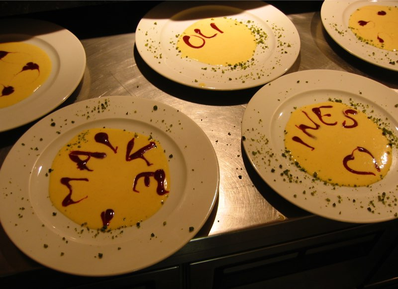
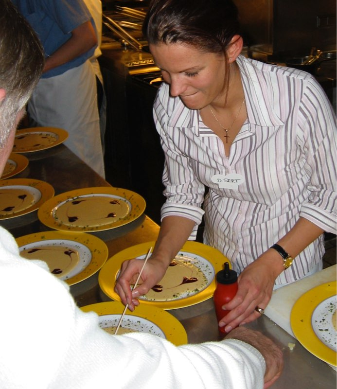
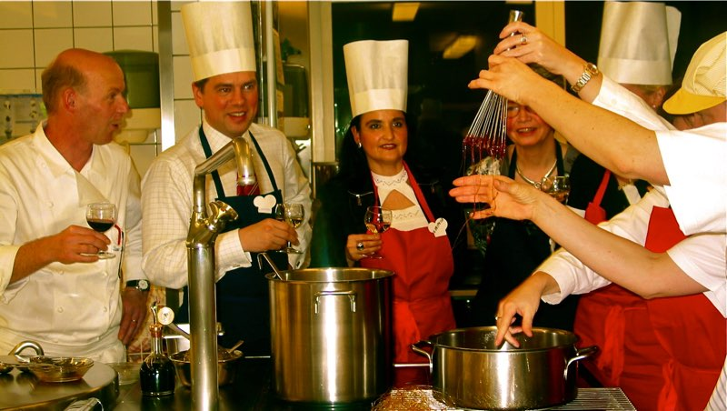
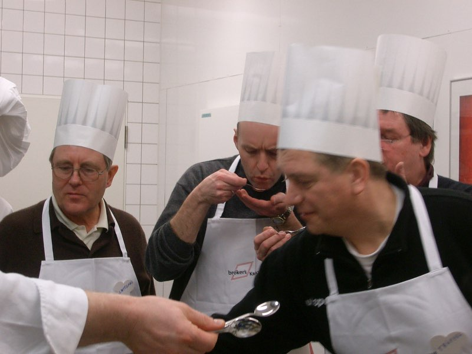
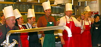
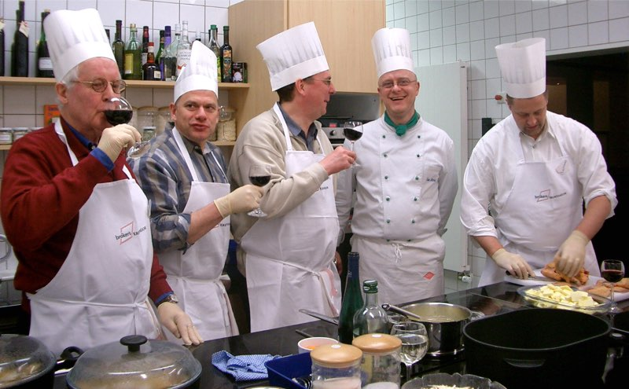
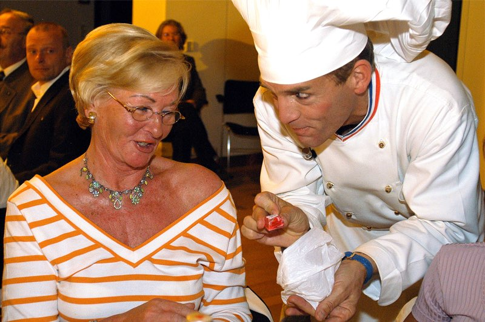
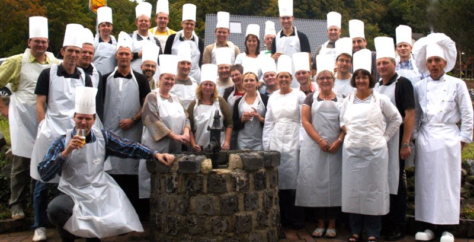
Drei Kollegen, ein Abend, viel Chaos.
Der Chef de Cuisine humoristique.
Die fesche schweizer Kellnerin.
Der englische Chef des Service.
Ein Erlebnisabend in drei Akten.
Ahnungslose Seminar- oder Incentive-Teilnehmer werden zu Stars auf der Bühne und gestalten ein einmaliges Programm. Was als normales Galadinner beginnt, entwickelt sich schnell zu einem unvergesslichen Kommunikationsevent der besonderen Art.
Festlich dekorierte Tische, gedämpfte Pianomusik, ein erlesenes Büfett oder Menü, die Tischkarten versprechen ein internationales Varietéprogramm der Extraklasse. Während des Essens kommuniziert ein „komischer Koch" mit den Gästen. Als Walk-Act-Künstler serviert er eine feine Mischung aus sensibler Situationskomik, Improvisationen im Dialog mit den Gästen und kleinen, charmanten Küchenzaubereien.
Nach dem Hauptgang füllt das Servicepersonal noch einmal die Gläser, langsam erlischt das Saallicht und das erwartungsvolle Publikum wendet sich der Varietébühne zu. Ein seriöser Conferencier begrüßt die Gäste. Als erste Darbietung kündigt er ein preisgekröntes Akrobatikduo an. Die Darbietung ist wirklich außergewöhnlich gut, das Publikum spendet reichlich Beifall.
Der Vorhang hebt sich — doch zum Erstaunen der Zuschauer ist die Bühne leer, nichts passiert, peinliches Schweigen im ganzen Saal, nur das hektische Geflüster der Walkie-Talkies des Orgateams sind zu hören. Der Conferencier ist sprachlos — das Publikum ist verunsichert.
Der Koch überbringt die Hiobsbotschaft höchstpersönlich: Die meisten Künstler des Varietéensembles sind mit dem Tourneebus im Stau stecken geblieben. Was tun?
Pfiffig die rettende Idee des Kochs: Er bittet einen kleinen Teil des Publikums hinter die Bühne, um dort gemeinsam mit den Artisten einige Varieté-Nummern auszuarbeiten. Während die Workshopteilnehmer verschwinden, serviert der Koch den verbliebenen Gästen eine kleine Comedyshow und inszeniert das Dessertbuffet.
Nach 45 Minuten intensiven Probens heißt es: Bühne frei für die neuen Stars des Abends. Unterstützt von den Profis wagen sich die Workshopteilnehmer auf die Bretter, die für ein paar Augenblicke die Welt bedeuten. Die Gäste im Saal sind von den Künsten ihrer Kollegen genauso überrascht wie diese selbst.
Das Programm endet in einem furiosen, musikalischen Sambaspektakel, bei dem die Wellen der Begeisterung und Emotionen zwischen Bühne und Publikum hin und her laufen.
Für alle, ob auf der Bühne oder im Publikum, ist der Abend ein einmaliges Erlebnis — und hat einen hohen Erinnerungswert. Die Erfahrung, eine kritische Situation gemeinsam zu bewältigen: Wir alle haben den Abend gerettet. Wir alle sind die eigentlichen Stars des Abends. Grenzen überschreiten — Dinge tun, die man sich vorher nicht zugetraut hätte.
Sie finden hier eine kleine Fotoauswahl, Pressefotos sowie zwei Video-Clips. Ausführliches Informationsmaterial sende ich Ihnen auf Wunsch gerne mit der gelben Post zu.

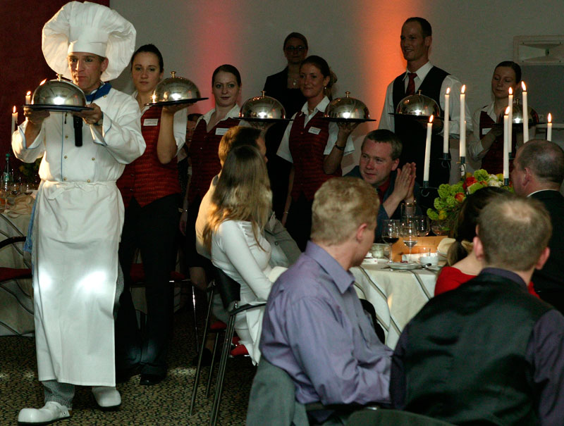

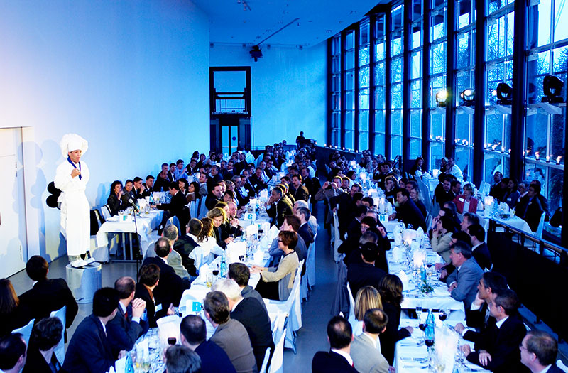

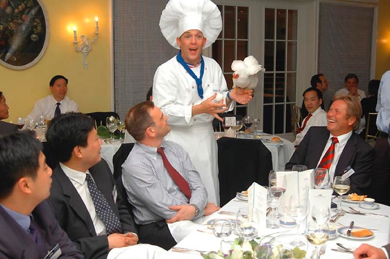
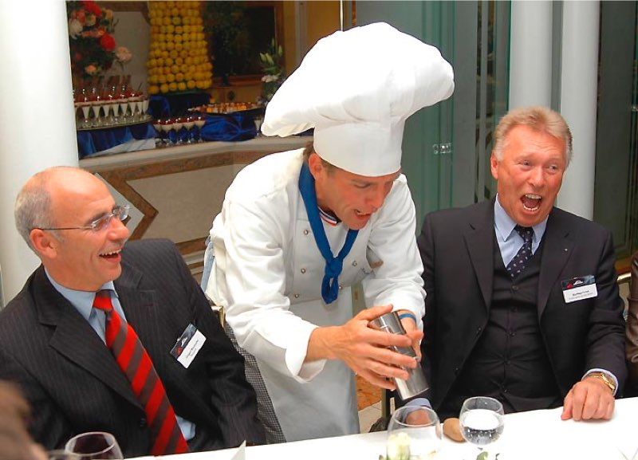

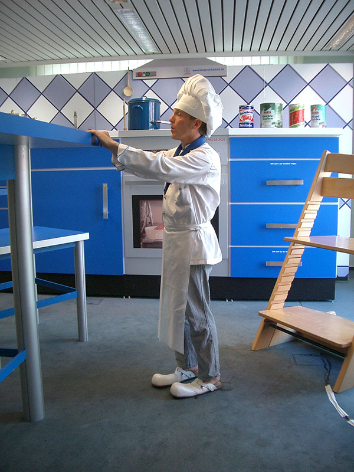
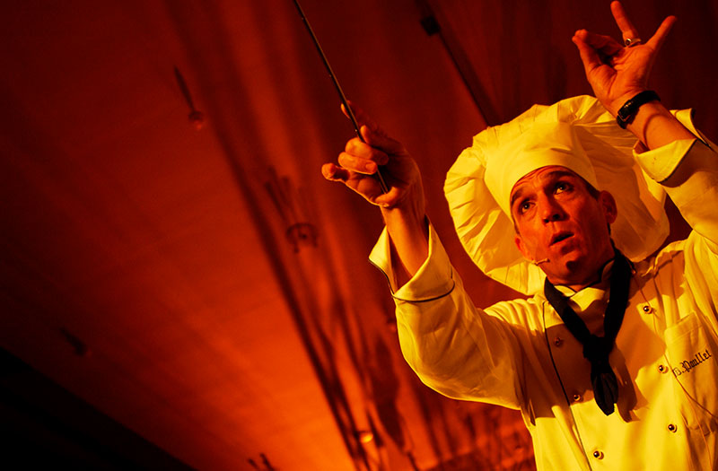
Eine Auswahl aus über 30 Jahren Bühne — Häuser und Auftraggeber, mit denen Maître Poulet gearbeitet hat.
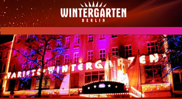
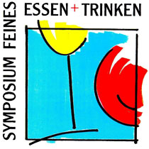
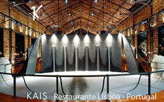
Geboren 1961 in São Paulo, Brasilien.
Besuch der Artistenschulen in Berlin und Paris.
Seit 1984 Soloprogramme für Bühne, Varieté und Events. Gastspiele unter anderem in Portugal, Spanien, Italien, Schottland, Dänemark, Holland, Luxemburg, Belgien, Österreich, Schweiz und Frankreich.
„… sich zu träumen, diesen Traum greifbar machen — um dann wieder zum Traum zu werden in anderen Menschen…"
Ebenso gilt mein Dank allen Veranstaltern und Agenturen, die mir immer wieder ihr Vertrauen schenken.
Ich freue mich auf Ihre Anfrage. Sagen Sie mir, was Sie planen — ich melde mich persönlich.
🇬🇧 English version
Comedy Cook with Chicken — Kitchen Party & Dinner Show.
The Performer plays the part of a small, charming French Chef. He has as his assistant a clever bantam-chicken called Jaquiline.
The meal begins with the Chef on stage playing a short musical number called „Salto Omelette". This is a rendition of Beethoven's 9th Symphony played on 5 frying pans.
During the meal Chef Poullet and Jaquiline move through the tables interacting with the guests and performing slapstick comedy and culinary based tricks.
Before the main course the Chef and his brigade enter with 6 serving platters covered by silver cloches from which they serve a musical surprise.
After Jaquiline has laid a fresh egg at each table the Chef, along with kitchen and waiting staff finish with a magical finale for dessert.